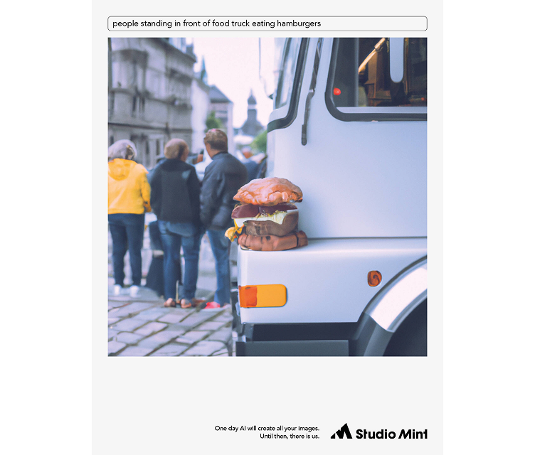
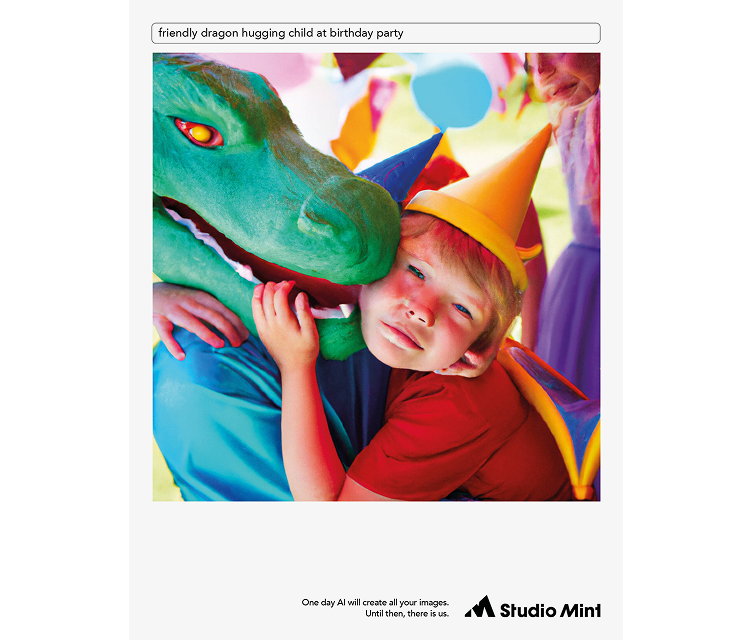
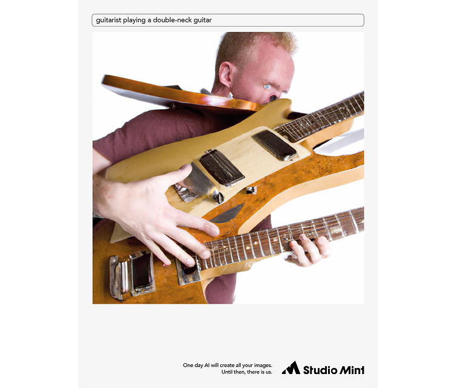

- Studio Mint
- Campaign / Print
Artificial Incompetence
Role: Junior Art Director / Prompt Writer
In early 2023 everyone was sure AI would kill production studios next. Studio Mint asked for a campaign. We did not have a brief. We had a failed DALL-E 2 image of friends playing golf, made for a client deck, that looked nothing like friends playing golf.
That became the work.
So we made print ads out of the fails. Prompt up top, mess below, and the line: one day AI will create all your images. Until then, there is us.
This is not a timeless craft piece. The models got really good, really fast, and the joke mostly dies if you run the same prompts today. What it shows is being reactive: catch the panic in the room, turn the fail into the campaign, ship while everyone is still arguing about AI.

friends playing golf

people standing in front of food truck eating hamburgers

friendly dragon hugging child at birthday party

guitarist playing a double-neck guitar
Ran in trade press and online. Silver at Svenska Designpriset 2023 in AI-generated graphics. First place in Resumé Månadens Print.